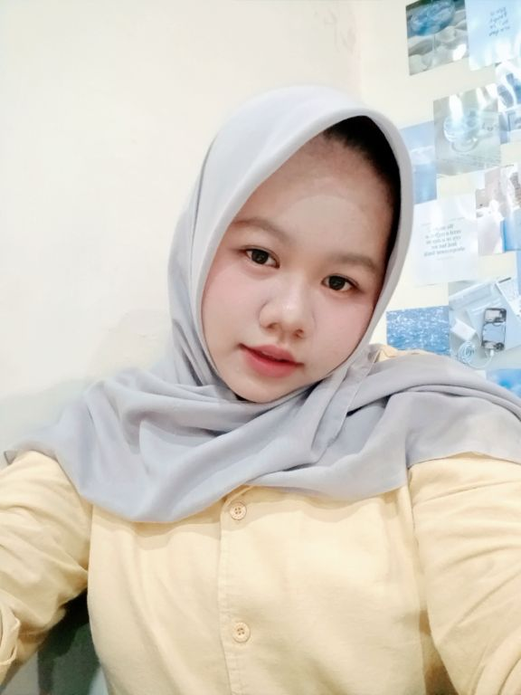
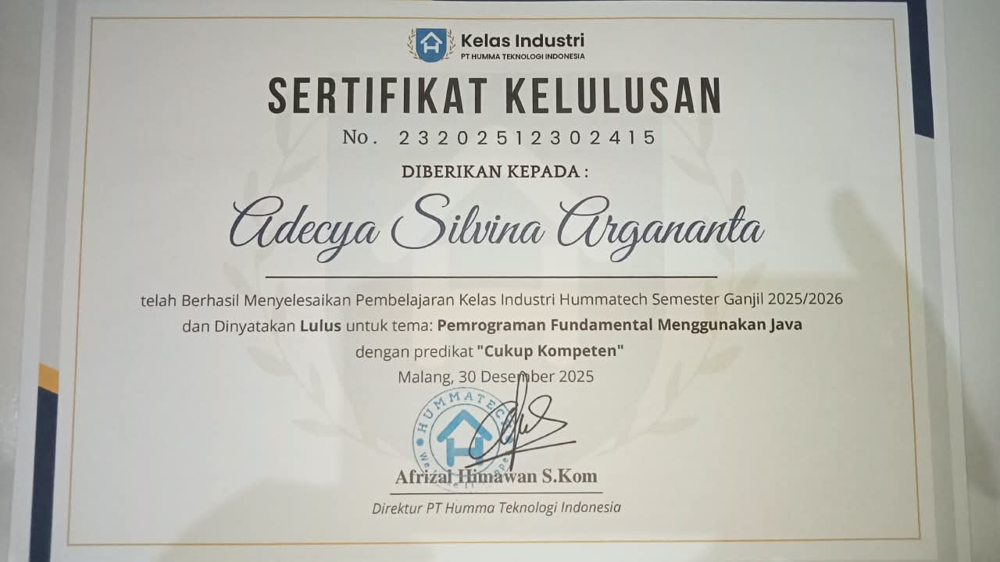
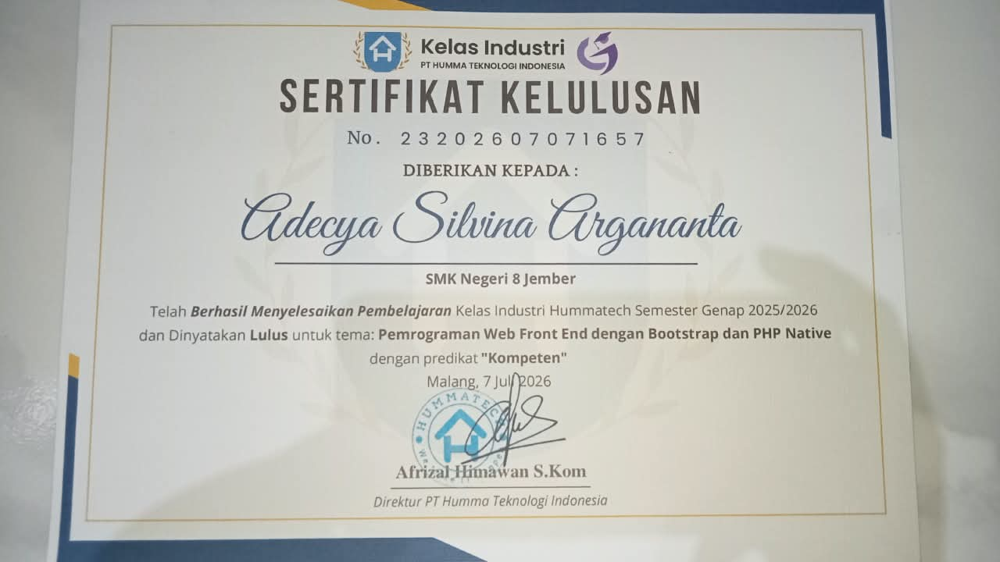

Website Portofolio Pribadi
Website untuk memperkenalkan profil, karya, dan pengalaman saya. Dibuat responsif dan bisa dibuka nyaman di HP.
- HTML
- CSS
- JavaScript
Siswa Rekayasa Perangkat Lunak di SMKN 8 Jember yang berfokus pada pengembangan web application. Terbiasa membangun aplikasi web interaktif dan responsif menggunakan PHP, Laravel, Tailwind CSS, dan MySQL.

Sedikit cerita tentang siapa saya dan apa yang saya kerjakan.
Saya Adecya Silvina Argananta, lahir di Jember. Saat ini saya bersekolah di SMKN 8 Jember dan sedang mendalami pemrograman web.
Saya senang belajar lewat praktik langsung: mencoba, salah, memperbaiki, lalu mencoba lagi. Saya terbuka untuk kesempatan magang, kolaborasi project, dan belajar dari orang lain.
Karya yang pernah saya buat, dari tugas sekolah sampai project pribadi.
Website untuk memperkenalkan profil, karya, dan pengalaman saya. Dibuat responsif dan bisa dibuka nyaman di HP.
Aplikasi untuk membantu pencatatan dan pengelolaan data siswa secara terstruktur.
Landing page sekolah dengan informasi profil dan program keahlian.
Beberapa pengalaman dan bukti kompetensi yang saya raih selama proses belajar dan berlatih.

Sertifikat Kelulusan Pembelajaran Kelas Industri Hummatech Semester Ganjil 2025/2026 dengan predikat "Cukup Kompeten".
Desember 2025
Sertifikat Kelulusan Pembelajaran Kelas Industri Hummatech Semester Genap 2025/2026 dengan predikat "Kompeten".
Juli 2026Perjalanan belajar saya sampai saat ini.
Jurusan Rekayasa Perangkat Lunak. Belajar pemrograman web dan mengerjakan project praktik di sekolah.
Lulusan tahun 2025 yang aktif membangun fondasi logika dan ketertarikan awal pada dunia pemrograman.
Ada pertanyaan, tawaran kerja sama, atau sekadar ingin menyapa? Kirim pesan saja.